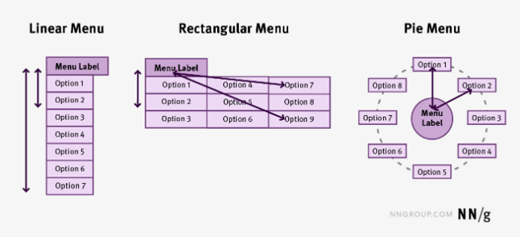
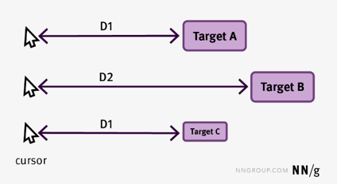

Please answer the following multiple-choice questions regarding Fitts' Law.
There is only 1(one) correct answer per question.
1. What does Fitts' Law describe?
2. Will a good Fitts' law design for a computer screen also be a good Fitts' law design for touchscreen, even if they do not have the exact same movement time when interacting with the design?
3. Considering Fitts' Law, rank the efficiency of these menus from best to worst: 
4. Using the image below, which of these statements is NOT true: 
5. Which of the following is true about these scrollbars?